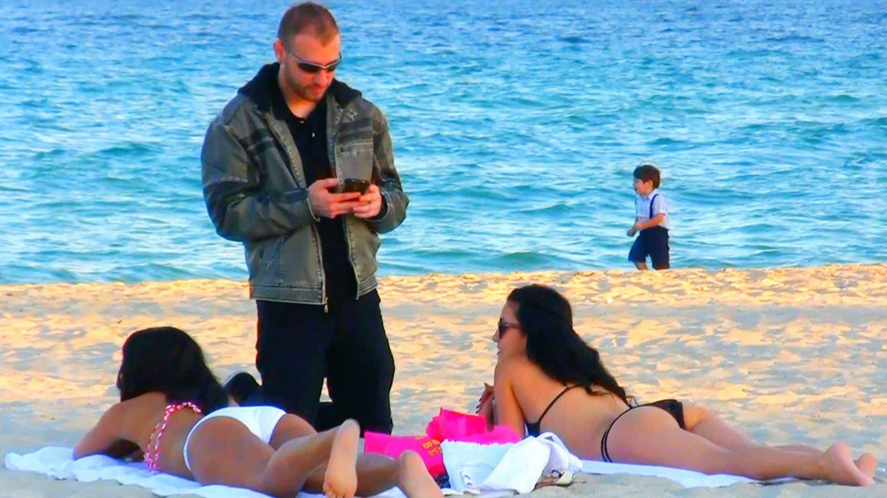

Gentlemen, it’s no secret that in our highly deregulated society, women have access to vast numbers of men at their disposal. With just the click of a few buttons, they can have anyone except the top 1% Chad over at their house, within a matter of minutes.
In order to compete with such rampant sexual deregulation, we must sharpen our game and we must sharpen it often. As Roosh so eloquently detailed in his newest masterpiece Game:
Beautiful girls in big cities are now directly and indirectly offered sex more than 1,000 times a month from men on the internet, in bars, on the streets, and within their social circles. If a girl has a basic internet profile, spends time on social networking, and goes out twice a week, I guarantee that she is offered more cock than even the most famous women of the past.
Unfortunately, this is absolutely true. The days of your “oneitis” sweetheart Jessica have long past, and the days of competing with Chad Thundercocks are among us. Of course, you could go full-on MGTOW and just become a virgin, cucked incel, but that’s not an option for any rational man.
So with this in mind, I have compiled four of the most powerful breakthroughs I’ve ever had in the past five years of gaming on Tinder. These breakthroughs have allowed me to sleep with far over 100 women, and if my writing and teaching are any good, then hopefully these tips will allow you to do the same. So without further ado, let’s go.
1. Be An Asshole

When a girl signs up for a Tinder account, she is immediately bombarded by thousands of thirsty guys. It doesn’t matter if she’s literally just a 4 wearing some makeup in her pictures—if she’s on Tinder, there are desperate guys waiting to fuck her.
…and do you know how most of them always start off their conversations? With some lame ass nice guy opener. They say something like “Hello beautiful,” or some other infinitely beige and forgettable comment, that is all but lost within a sea of thirsty beta males chasing her validation.
No. If you want to succeed at tinder, you need to learn how to be an asshole. Be okay with teasing her and negging her, and don’t EVER give her more validation than she’s earned. Funny enough, this may sound cruel, but it’s actually how an emotionally healthy man naturally treats a woman.
When a man is fulfilled and happy by himself, he doesn’t constantly shower a girl in complements. He only compliments people when they actually deserve it. This is the key—you don’t want to just be an asshole all of the time. Just being clear about who you are, what you want, and what you think of a girl is acceptable enough.
So next time, instead of opening with “Wow you’re gorgeous,” try one of these openers instead:
- “You look like trouble”
- “Wow, you look just like that girl from the Office”
- “I don’t trust your innocent face for a second”
These have all worked great for me in the past, but better yet, if you can actually personalize an opener WITH a neg, then it’s almost a 100% guaranteed response. For example, I recently saw a girl who had a very innocent face, but then upon scrolling past her pictures saw her showing off her butt in a bikini.
So, naturally, my opener was: “Your first pic says you’re a good girl, but your 5th pic definitely disagrees.” Anything like this that’s sexual right off the bat is good, which gets me to my next point.
2. Screen Hard
If you’re trying to get laid fast, and use Tinder EFFICIENTLY, you have to understand that it’s a numbers game. Most of my Tinder game is systematized at this point, and one critical element of this system is that I always start off with a slightly sexual opener. This does two things:
- It shows the girl that I’m not a beta male ashamed of my sexuality
- It screens her for availability (AKA if she’s DTF)
Girls who are just there to waste your time and get attention won’t even respond, so using the openers I previously mentioned are critical. This is an important element of text game, as well. Learning to move fast, but with finesse, is one of the greatest tools in a player’s toolbox.
Like it or not, Tinder is a numbers game, plain and simple. Anyone who tells you they have a magic formula to bed 100% of the women they talk to is flat out LYING to you. I prefer to think of my Tinder game as a system with multiple phases, so with this in mind, here are my typical close rates:
- Phase 1: Opener (Start Off With 100 Girls)
- Phase 2: Get Her Contact Info (Down to 25 Girls)
- Phase 3: Hang Out With Her (Usually Around 7-10 Girls)
As you can see, these aren’t bad odds. A 7-10% chance of banging a girl from Tinder is phenomenal, considering that you don’t have to do shit except sound out some copy-and-paste responses and openers. Once you wrap your mind around this, and start to aggressively screen girls for sexual availability, and take the numbers approach, you’ll notice that far more women will be in your contacts list than ever before.
3. Spike Her Emotions
The reason why women sleep with a man is partially looks, money, and status, which I will discuss as the next breakthrough. And while women do find these things attractive, they’re far more important for an LTR than they are for a casual fling. For a casual fling (AKA from Tinder) emotions are king.
Learn how to spike her emotions. Don’t be ashamed of your sexuality or afraid to say things that might possibly offend her. Every single great pickup artist and Casanova in the world knows that women respond to one thing, and one thing only: how they feel.
So learn the things to talk about with a girl that will make her feel emotions. Tease her, play with her, say things that are obnoxious, and most importantly, get her hamster wheel running. Any guy who can successfully make a girl’s subconscious do the game for him is already 10 steps ahead of the curve.
Here are some easy and simple ways to spike her emotions:
- Be a little bit of an asshole (discussed in point #1)
- Learn how to pass her shit tests
- Get good at dishing out negs (not too many though, just one or two is fine)
- Learn how to tell stories that are interesting and fun
Most importantly, however, LIVE AN INTERESTING AND FUN LIFESTYLE. This is something that all people (not just women) are magnetically drawn to, and it’s something that cannot be faked. Learn to follow your passions, have hobbies, and become an interesting man overall.
…and then, learn how to convey these characteristics through spitting game on Tinder.
4. Looks, Money, Status
As shallow as it is, Tinder is simply a looks-based game. When she’s on Tinder, she can’t sense if you’re an alpha male or not, because there’s no body language or facial expressions to read. This will come in person.
So, until you do in fact meet her in person, you need to get the “game trifecta” down: looks, money, and status. Ideally, you should have pictures which convey all three of these things, to the point where it’s a little bit obnoxious. Take a good look at Dan Bilzerian’s Instagram, and you’ll see what I mean.
Now obviously I’m not saying you need to be that extreme, nor that you need to be a millionaire playboy, but any little bit of LMS that you can show off helps. I personally recommend getting in great shape and posting some pictures of you at the beach, on a boat, or at a friend’s lake house, perhaps.
Return of Kings has already discussed ample strategies for losing weight, building muscle, and getting an aesthetic physique that attracts women. Here are some previous posts to consider reading through:
Once you’ve got an image showing off your looks, I consider having one or two that show off money and status, but not in an obnoxious way. Something of you on vacation somewhere tropical is always nice, or perhaps a picture of you speaking at a convention, or in a suit. Anything that conveys status, looks, money, and the fact that you’re an alpha male who lives a fun life will always do well.
Conclusion

Tinder has gotten me through more breakups than I can remember. So if you can’t stop thinking about her, whoever she is, you need to get on Tinder, Bumble, and every other dating app there is.
Like it or not, the times are changing—and while I do recommend men use online dating to keep a consistent harem of women hanging around, I do not recommend it as the sole source of a man’s sexual success.
Spend time learning to cold approach women, go on plenty of dates, expand your social circle, and study the concepts of inner game just as well as the concepts of outer game.
If you’re looking for a definitive guide to game, then I suggest you take a look at Roosh’s latest publication, aptly entitled: “Game.” It covers everything you need to know from why game is important in this day in age, how to study the concepts of game, how to meet and attract women, and how to have effective relationships.
It’s also been banned by the elites of Amazon, so you know it must be good. Check it out now, thought criminal, before Orwell’s thought police come knocking on your door for the crime of having a penis.
Read More: 5 Common Things Women Say On Tinder And What They Really Mean